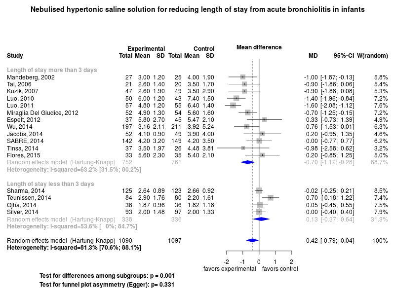
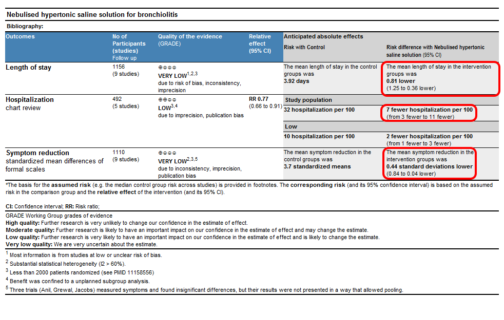

Clinical summary:
This meta-analysis suggests that the clinical intervention is not effective among hospitalized children for reducing length of stay.
The substantial heterogeneity initially found for the length of stay was largely explained by imbalances in the duration of illness prior to randomization to study groups (see Forest plot below) and the heterogeneity was 'unimportant' in the studies without inbalances in duration of illness at randomization.
Among outpatients who received multiple doses, we found significant reduction in symptom scores and the rate of hospitalization.
Meta-regression shows that recent trials are significantly more likely to be negative.
The quality of evidence is low or very low for all outcomes (see methods) due to publication bias, imprecision of results, and other factors (see GRADE Profile below).
Additional interpretations may be in the references in the 'Cited by' section below.
We included randomized controlled trials included in the meta-analysis by Brooks et al and additional trial(s) published subsequently on PubMed or ClinicalTrials.gov.
Methods overview: Studies were abstacted into standardized tables of , and results. This repository updates a previously published meta-analysis.(1) Newer studies included are listed in the references. Rationale for newer trials excluded may be listed at the end of the references.
Results: Details of the studies included are in the:
Below is the forest plot for the primary outcome. Additional Forest plots may be available.

The Summary of Findings Table (SoF) from the GRADE Profile is below (source files).

References:
Systematic review(s)
Most recent review at time of last revision of this repository
- Zhang L, Mendoza-Sassi RA, Wainwright C, Klassen TP. Nebulised hypertonic saline solution for acute bronchiolitis in infants. Cochrane Database Syst Rev. 2017 Dec 21;12:CD006458. doi: 10.1002/14651858.CD006458.pub4. PMID: 29265171.
- Heikkilä P, Renko M, Korppi M. Hypertonic saline inhalations in bronchiolitis-A cumulative meta-analysis. Pediatr Pulmonol. 2017 Dec 21. doi: 10.1002/ppul.23928. [Epub ahead of print] PMID: 29266869.
- Brooks CG, Harrison WN, Ralston SL. Association Between Hypertonic Saline and Hospital Length of Stay in Acute Viral Bronchiolitis: A Reanalysis of 2 Meta-analyses. JAMA Pediatr. 2016 Jun 1;170(6):577-84. doi: 10.1001/jamapediatrics.2016.0079. PMID: 27088767
- Only reviewed hospitalized infants: Zhang L, Mendoza-Sassi RA, Klassen TP, Wainwright C. Nebulized Hypertonic Saline for Acute Bronchiolitis: A Systematic Review. Pediatrics. 2015 Oct;136(4):687-701. doi: 10.1542/peds.2015-1914. PMID: 26416925
- Only reviewed hospitalized infants: Everard ML, Hind D, Ugonna K, Freeman J, Bradburn M, Dixon S, et al. Saline in Acute Bronchiolitis RCT and Economic evaluation: hypertonic saline in acute bronchiolitis - randomised controlled trial and systematic review. Health Technol Assess. 2015 Aug;19(66):1-130. doi: 10.3310/hta19660. PMID: 26295732
- Badgett RG, Vindhyal M, Stirnaman JT, Gibson CM, Halaby R. A Living Systematic Review of Nebulized Hypertonic Saline for Acute Bronchiolitis in Infants. JAMA Pediatr. 2015 Aug 1;169(8):788-9. doi: 10.1001/jamapediatrics.2015.0681 PMID: 26099054
Randomized controlled trials
New trial(s) not included in the most recent review above
- Morikawa Y, Miura M, Furuhata MY, Morino S, Omori T, Otsuka M, et al; Tokyo Pediatric Clinical Research Network. Nebulized hypertonic saline in infants hospitalized with moderately severe bronchiolitis due to RSV infection: A multicenter randomized controlled trial. Pediatr Pulmonol. 2018 Jan 12. doi: 10.1002/ppul.23945. PMID: 29327810
Studies undergoing review
- Köse S, Şehriyaroğlu A, Esen F, Özdemir A, Kardaş Z, Altuğ U et al. Comparing the Efficacy of 7%, 3% and 0.9% Saline in Moderate to Severe Bronchiolitis in Infants. Balkan Med J. 2016 Mar;33(2):193-7. doi: 10.5152/balkanmedj.2016.16840. Epub 2016 Mar 1. PMID: 27403389
- Shmueli E, Berger T, Herman YA, Chodick G, Rom E, Bilavsky E, Ashkenazi-Hoffnung L, Ashkenazi S, Amir J, Prais D. Real life comparison of three general paediatric wards showed similar outcomes for children with bronchiolitis despite different treatment regimens. Acta Paediatr. 2017 May 16. doi: 10.1111/apa.13921. PMID: 28510350.
- Carsin A, Sauvaget E, Bresson V, et al. Early Halt of a Randomized Controlled Study with 3% Hypertonic Saline in Acute Bronchiolitis. Respiration. 2017 Jun 24. doi: 10.1159/000477495. PMID: 28647745./li>
- Zhang L, Gunther CB, Franco OS, Klassen TP. Impact of hypertonic saline on hospitalization rate in infants with acute bronchiolitis: A meta-analysis. Pediatr Pulmonol. 2018 Jun 12. doi: 10.1002/ppul.24066. PMID: 29893029
Trials excluded - selected list of important trials
- Positive trial; however, treatment with 7% hypertonic saline also included 0.1% hyaluronic acid: Nenna R, Papoff P, Moretti C, De Angelis D, Battaglia M, Papasso S, et al.
Seven percent hypertonic saline--0.1% hyaluronic acid in infants with mild-to-moderate bronchiolitis. Pediatr Pulmonol. 2014 Sep;49(9):919-25. doi: 10.1002/ppul.22935. PMID: 24574431
Cited by
This repository is cited by:
- WikiDoc contributors. Bronchiolitis medical therapy. WikiDoc. Nov 9, 2014. Available at: http://www.wikidoc.org/index.php/Bronchiolitis_medical_therapy#Hypertonic_saline. Accessed November 9, 2014.
- Badgett RG, Vindhyal M, Stirnaman JT, Gibson CM, Halaby R. A Living Systematic Review of Nebulized Hypertonic Saline for Acute Bronchiolitis in Infants. JAMA Pediatr. 2015 Aug;169(8):788-9. doi: 10.1001/jamapediatrics.2015.0681. PMID: 26099054
{kind=link}
{kind=link}